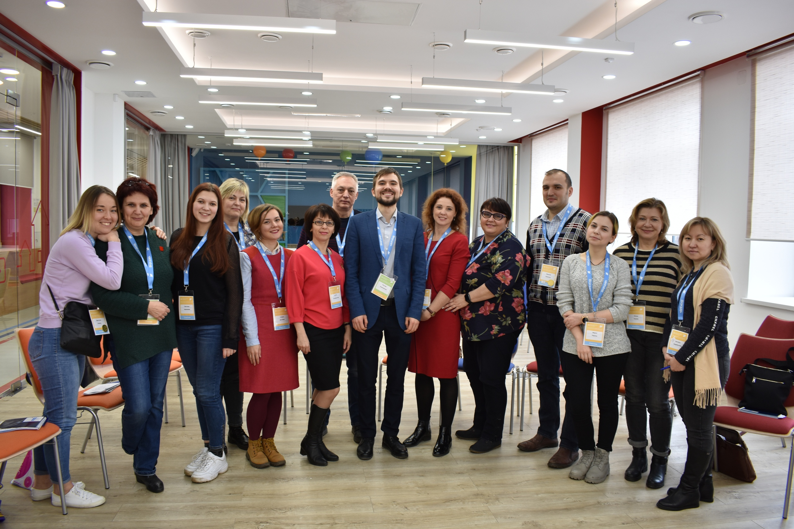
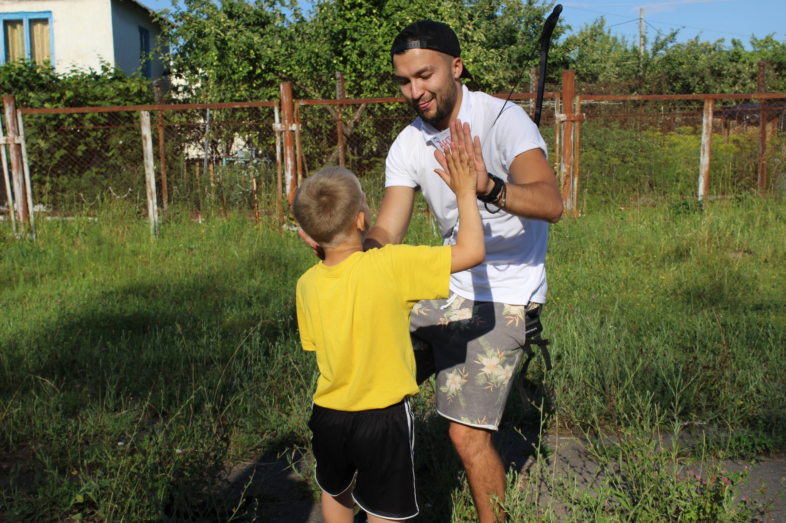

Фонд в цифрах
2
реабилитационные
программы
> 250
детей Курской области
> 250
добровольцев
> 40
сопровождающих
Фонд «Феникс» — благотворительный фонд реабилитации детей и подростков, попавших в
трудную жизненную ситуацию, основан в 2019 году.
Миссия фонда — содействие в развитии
реабилитации детей и подростков, попавших в трудную жизненную ситуацию или перенесших тяжелые
заболевания, а также помощь их родителям и/или опекунам. Мы хотим продолжить и поддержать развитие
развитие психосоциальной реабилитации на территории Российской Федерации и сделать этот вид помощи
доступным всем нуждающимся в нем детям.
Фонд основан в 2019 году, но до своего учреждения долгое время являлся социальным проектом, который развивался на базе Курского государственного медицинского университета. Приобретя опыт, авторы проекта учредли благотворительный фонд, чтобы иметь возможность помочь как можно большему числу детей и подростков, нуждающимся в социально-психологической реабилитации, а также родителям/опекунам и лицам, работающим с детьми и подростками, попавшими в трудную жизненную ситуацию/перенесших тяжелые заболевания.
Читайте о команде фонда по ссылке
Руководитель реабита-
ционных программ,
Директор фонда
Руководитель реабита-
ционных программ,
Директор фонда
Руководитель реабита-
ционных программ,
Директор фонда
Руководитель реабита-
ционных программ,
Директор фонда
Руководитель реабита-
ционных программ,
Директор фонда
реабилитационные
программы
детей Курской области
добровольцев
сопровождающих
Накопленный за рубежом и в России опыт проведения реабитационных лагерей, позволяет считать актуальным проведение социально-психологической реабилитационной программы для детей, попавших в трудную жизненную ситуацию. Подобные формат делает возможным в короткие сроки восстановить социальное и психологическое здоровье детей и подростков.
Программы позволяют участникам расширить границы своего опыта, погрузиться в безопастную среду, что в свою очередь позволяет вернуть доверие к миру, поставить и преодолеть различыне вызовы, получить поддерживающию обратную связь, справиться с болезню, испытать радость и цуспех во время мероаприятий, найти друзей и снизить изоляцию.
Для реабилитации задач социально-психологической реабилитации Фонд принимает в своей работе методики, доказывавшие эффективность как за рубежом, так и в России. специалисты фонда регулярно обмениваются опытом с колегами.
Ⅸ научно-практическая конференция «Ребенок в ситуации тяжелого заболевания: практики психолого-социальной реабилитации»
После участия в подобных программах дети продолжают наслождаться детством, у участников повышается вера в выздоровление. Подобные прграммы мотивируют их обсуждать и брать на себя новые вызовы и создают возможности для исцеления. У ребят растет интерес к социальной деятельности, повышается чувство собственного достоинства, появляется уверенность в себе, повышается самооценка, которая до этого была занижена, появляется надежна на будущее, востановления контроля над собственной жизнью. Так же, исследователями отмечаются позитивные изменения в улучшении навыков взаимоотношений как со сверстниками, так и со взрослыми.
С графиком ближайших программ вы можете ознакомиться в разделе «родителям и опекунам»
На сегоднейший день благотворительный фонд «Феникс» — второй в России фонд, который занимается социально-психологической реабилитацией детей, и первый фонд, который занимается социально-психологической реабилитацией детей, попавших в трудную жизненную ситуацию
О том, как стать участником программы чичтайте по ссылке.
Сделать пожертвованиеНа программах в Фениксе работают волонтеры, которые прохожят обучающий курс перед каждой реабилитационной программой. Специалисты фонда проводят образовательный интенсивный курс обучения по основам детской и подростковой психологии, методикам социально-психологической реабилитации и тонкостям работы в команде.
Присоединяйся к нашей команде волонтеров
Сделать пожертвованиеУже два года Феникс проводит реабилитациооные программы для детей, попавших в трудную жизненную ситуацию.
В 2018 году, на базе Курского государственного медицинского университтета открыт волонтерский отряд «Феникс», целью которого является социально-психологическое сопровождение и поддержка детей и их сопровождающих, нахдящихся на лечениии в детских больницах г. Курска.
Психологическая поддержка семьи, в которой ребенок находиться на длительном лечении имеет важную роль и большую значимость, поскольку сама ситуация болезни ребенка выступает неким стрессом, как для самого ребенка, так и для его родителей, что обуславливает необходимость помощи в адаптации семьи к сложившейся ситуауции.
Особое психологическое сопровождение семей, столкнувшимся с болезнью ребенка, должно начинаться еще в момент лечения. Каждый день ребенку необходимы силы для того, чтобы бороться с болезнью. Но даже в этот сложный период ребенок, прежде всего, остается ребенком: ему хочется познать мир, дружить — делать всё то, что так необходимо детям для гармоничного развития.
Родителям, которые находятся рядом с детьми в больнице, помогают на процедурах и очень переивают, тоже нужна поддержка
Программа разработана на основе методики терапевтического отдыха и помогает улучшить психоэмоцианальное состояние ребенка и родителя, находящегося на лечении, а также быстрее адаптироваться в обществе.
Встречи с детьми и родителями проходят в рамках творческих мастер-классов, которые позволяют участникам столкнуться с новой ситуацией и преодолевать ее при поддержке волонтеров.
Волонтеры проходят специальное обучение и только после успешного его завершения допускается к программе.
Особое внимание на мастерской уделяется сохранению эффективного взаимодейсвия между родителям и ребенком, а также поддержке и восстанавлению гармоничных отношений между ними.
На данный момент в больничном проекте приняло участие более 7 добровольцев и более 30 детей.
Присоединяйтесь к нашей команде
Сделать пожертвование